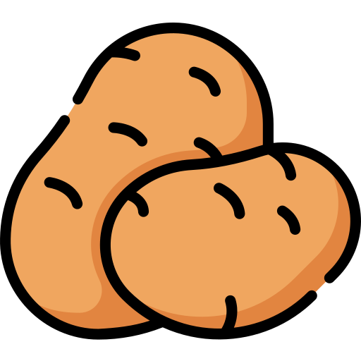
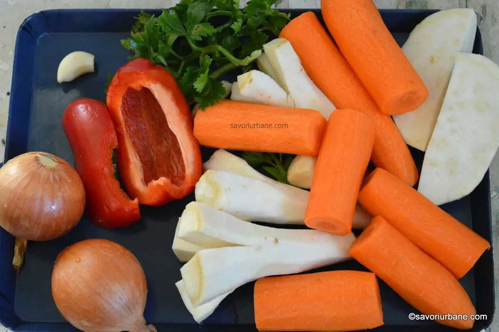

Ingrediente:
Instructiuni:
Se decojesc morcovii, radacina de patrunjel, radacina de
telina si cepele. Morcovii se taie in bucati mari,
la fel si radacina de telina (pe aceasta o crestam la
capete pentru gust mai bun). Ceapa o censta intr-unul
dintre capete, iar radacina de telina o taiem felii groase.
Se pun 3l de apa intr-o oala mare.
Se pun zarzavaturile si carnea in oala.
Se da focul la mare si asteptam pana da in clocot apa.
Cand da in clocot, dam focul la mai mic, astfel incat
sa fiarba incetisor.
Dupa cam trei ore, supa ar trebui sa fie gata. Putem testa
daca infigem o furculita in morcovi si in carne si intra usor.
Scoatem radacina de patrunjel, radacina de telina si cepele.
Supa este gata de servit cu taietei sau goala.
Este foarte buna pentru raceala si se face foarte usor.
Toate retetele sunt luate si mai apoi prelucrate de pe savori urbane.
Moldovan Diana